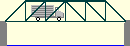
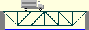
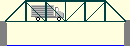

Pratt
Deck Truss
Pratt
Deck TrussWhen a truss bridge has its located at the top chord, it is called a .
When a truss bridge has its deck located at the bottom chord, it is called a .
A number of standard truss configurations are commonly used in bridge structures. These configurations are defined primarily by the geometry of their vertical and diagonal . Three of the most common standard configurations are pictured below. All of them are named for the 19th century engineers who developed them.
 Howe Through Truss
 Howe Deck Truss
 Pratt Through Truss
Pratt
Deck Truss
 Warren
Through Truss
Warren
Through Truss
 Warren Deck Truss
Warren Deck Truss
Regardless of their configuration, all trusses have the same basic component parts.